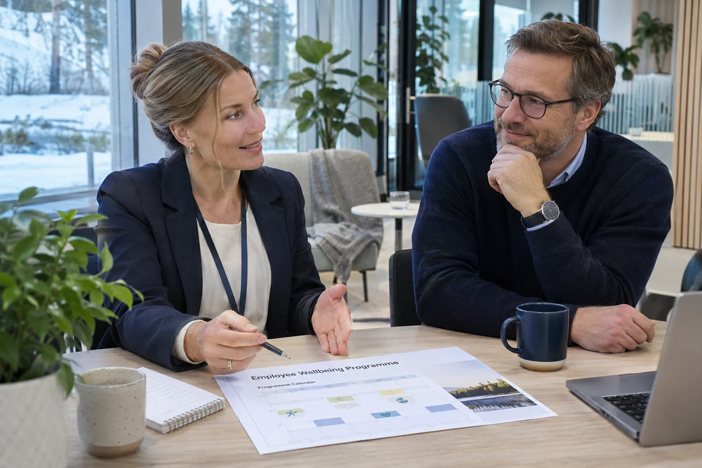

For the employee
A private personal plan.
Individual guidance, goals and check-ins belong in the employee experience. Meal logs, health records and personal progress are not exposed to the employer.
Proposed collaboration packages
Choose a programme direction, agree the goals and give employees personal guidance. Evaluate participation and group-level trends while keeping individual health information private.
Choose a starting point
Discuss individual plans for activity, meals and recovery around working routines. Goals could include more regular movement or improved dietary habits, selected with participants rather than imposed as company-wide health targets.
For the employee
Individual guidance, goals and check-ins belong in the employee experience. Meal logs, health records and personal progress are not exposed to the employer.
For the organisation
Discuss aggregate participation, voluntary feedback and programme trends. Selected business indicators, such as team-level output or service quality, are assessed at an agreed group level, without matching named employees to health outcomes.
Proposed programme packages, subject to feasibility and agreement. Employer reporting, challenges and recognition are scoped separately before implementation; no health or business improvement is guaranteed.
From discussion to an agreed rollout
01Design the programme
An agreed programme goal, target audience, review date and privacy responsibilities.

02Support the individual
Private personal goals and guidance adapted to employee routines, with clear onboarding and support.
03Engage the team
Voluntary activities and feedback that help participants maintain manageable habits.
04Review the evidence
An aggregate review of participation and usefulness; programme changes and renewal based on agreed evidence.
Before launch, agree lawful processing, any required special-category condition, roles, employee information, retention and a data-protection impact assessment where required. Participation must be genuinely voluntary; consent alone is not assumed sufficient in an employment relationship.
Aggregation is not automatically anonymisation. Agree minimum group sizes, suppress small groups and assess re-identification risk. Optional rankings should concern teams and participation, not individual health status. Recognition must be accessible and must not penalise opting out or reward disclosure of sensitive health data.
Explore associations at group level, with data-quality limits and other possible explanations stated. Personal health information must not be used to rank employees for pay, promotion or performance decisions.
Commercial scope
Agree participant access, programme duration and optional services before launch. Recognition budgets and evaluation work are identified separately.
Goals, duration, workforce and evaluation scope
Agreed participant numbers and access period
Launch communications, guidance and support
Challenges, recognition and any reward budget
Reporting safeguards, indicators and review scope
Each proposal defines deliverables, responsibilities, fees and acceptance criteria. No prices or outcomes are guaranteed by these reference packages. Final terms require written agreement.
Start with your priorities
Tell us your goals, intended scope and existing arrangements.
Request a Tailored Proposal